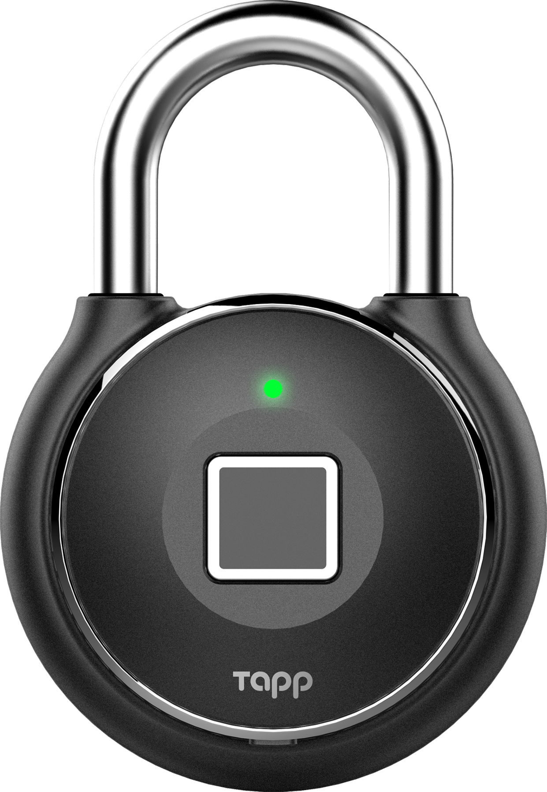

Chi Siamo
Benvenuti in TennoLock, una startup innovativa che offre lucchetti smart e tecnologici di alta qualità a un prezzo molto accessibile.TennoLock è una soluzione ideale per chi cerca un modo sicuro e conveniente per proteggere i propri oggetti di valore. I nostri lucchetti sono progettati con la più recente tecnologia di sicurezza e sono dotati di funzionalità avanzate che li rendono molto convenienti da usare.
Il nostro prodotto offre una vasta gamma di caratteristiche innovative, tra cui l'apertura con impronta digitale e la possibilità di aprire il lucchetto tramite Bluetooth dal proprio smartphone.
TennoLock è il miglior prodotto che puoi trovare sul mercato ad un costo incredibilmente basso. Siamo riusciti a mantenere il prezzo del nostro prodotto molto accessibile grazie all'utilizzo di materiali di alta qualità e alla scelta di un processo produttivo efficiente e razionale.
La nostra missione è quella di offrire ai nostri clienti la massima sicurezza e comfort a un prezzo accessibile.
In conclusione, se stai cercando un modo sicuro e conveniente per proteggere i tuoi oggetti di valore, TennoLock è la scelta perfetta per te. Inizia a proteggere i tuoi oggetti di valore con il nostro lucchetto smart e tecnologico di alta qualità!

GALLERIA DEI PRODOTTI



IL TEAM
Leonardo Di Carlo
Giacomo Meratti
Niccolò Batistini
Edmard Guilot
Filippo Lulli
I PRODOTTI
Tennoround Master
Porta sempre con te il nuovo e tecnologico Tennoround
Master, torna utile in qualsiasi situazione con i suoi sistemi di
difesa avanzati.
Questo lucchetto è di ultima generazione Tennolock.
Tennosafe V2
Il Tennosafe V2 è ideale per proteggere i tuoi beni più importanti, come gioelli e denaro. Perfetto per essere utilizzato con una cassaforte come protezione aggiuntiva.
Tennobike Model 3
Hai paura dei [redacted] ? Non c'è problema! Da ora in poi la tua bicicletta sarà sempre al sicuro grazie al Tennobike Model 3